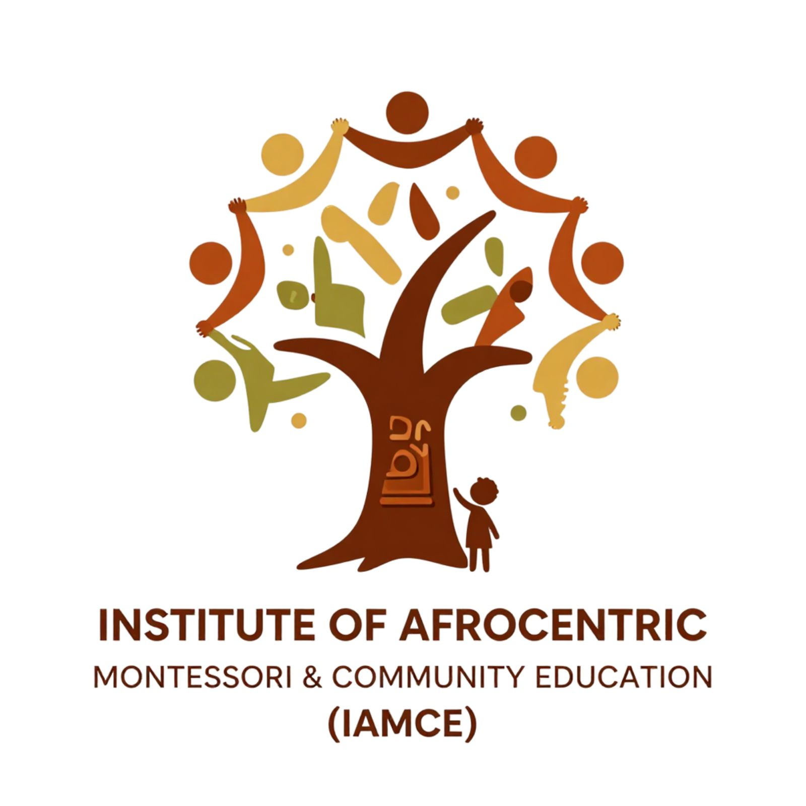

Understanding the Child
Explore human development, observation, independence, movement, language and social-emotional development, and the needs that shape learning.
African Montessori Hub · Professional learning
Rooted here.
Reimagining what’s possible.
Preparing African educators to understand the child, transform practice, and lead the future of education.

A place to learn, question & grow
Africa needs thoughtful practitioners who deeply understand children.
IAMCE is the professional learning, training and practitioner-development arm of the African Montessori Hub. We expand access to Montessori and child-development education grounded in African realities, cultures, communities and ways of knowing.
Our programs explore the developmental principles behind Montessori practice: how children learn, why environments matter, how observation informs teaching, how independence develops, and how adults prepare themselves to respond to the child.
Montessori philosophy is brought into conversation with African knowledge systems, Ubuntu, local languages, cultural practices, family wisdom and contemporary research. Practitioners examine how its developmental principles can be understood, challenged, enriched and practised within African contexts.
Experience it. Reflect on it. Make it your own.
Observe children, practise presentations, prepare learning environments and explore materials alongside experienced educators. Four connected areas guide the journey.
Explore human development, observation, independence, movement, language and social-emotional development, and the needs that shape learning.
Become a reflective, intentional practitioner. Transformation begins with how we see, listen to and relate to children.
Create beautiful, purposeful and culturally meaningful spaces that invite independence, concentration, exploration, belonging and joy.
Examine Montessori through African childhoods, languages, histories, indigenous knowledge, Ubuntu and the lived experiences of children and families.
Learning may include intensive sessions, practical workshops, classroom observations, demonstrations, mentorship, coaching, communities of practice, research and applied projects.
Bring the learning to life
What you learn belongs in the spaces where children live and grow: classrooms, homes and community programs. Coaching, observation, mentorship and reflection help you keep refining your practice.
A pathway for practitioner learning and application, connecting Montessori understanding with African contexts.
One of IAMCE’s initiatives supporting those whose work brings them into relationship with children.
Opportunities for educators and caregivers at different stages of their professional journey.
Learn alongside others, exchange experiences and reflect on what is happening in your own setting.
Our vision
African practitioners equipped to understand children deeply, serve them intentionally, and shape educational approaches rooted in both developmental science and African knowledge.
Knowledge grows when we share it
IAMCE is building a community of African practitioners who contribute to educational knowledge. We envision educators who document practice, ask difficult questions, conduct research, develop locally relevant materials and share knowledge across borders.
Our long-term ambition is a strong network of practitioners, researchers, schools, families and institutions reimagining excellent child-centred education across the continent.
IAMCE brings Montessori and Africa together through relationship, reflection, research and practice.
There is room for your experience
Montessori educators, early childhood practitioners, teachers, school leaders, caregivers, community educators, education entrepreneurs and others whose work places them in relationship with children.
Whether you are encountering Montessori for the first time or deepening years of practice, there are opportunities to learn, question, practise, collaborate and grow.
Learning from our community
Explore the learning, impact and reflections from the inaugural IAMCE fellowship, where Montessori principles and Ubuntu inform culturally responsive education.
Your practice. Our shared possibility.
Tell us where you are in your journey. Connect with AMH to explore IAMCE learning opportunities and upcoming programs.
Connect with IAMCE